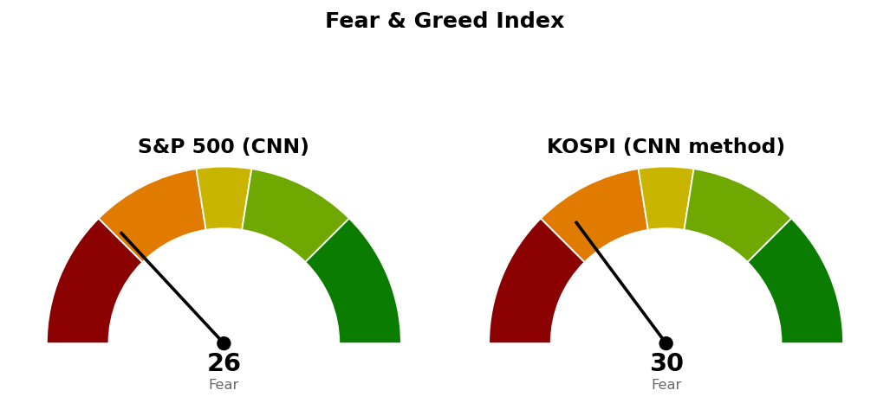

2026-10-30 장전 예측 5건: 5건 중 5건 적중(100.0%)
| 예측 | 근거 | 실제 | 판정 |
|---|---|---|---|
| 나스닥 종합 종가 26,023 하회 | 다음 지지 26,023 — 10/29 종가 26,185, 나스닥100 선물 -2.59%, 인텔·아마존 급락 예상 보도 | 종가 25,437 (-2.86%) | 적중 |
| 나스닥 종합 장중 25,846까지 하락 | 사다리 2차 25,846(종가 대비 ATR 376의 0.90배 아래) — 나스닥100 선물 -2.59%, 저가 28,761 | 저가 25,177 | 적중 |
| S&P 500 종가 7,701 하회 | 다음 지지 7,701 — 10/29 종가 7,720, S&P 500 선물 -1.09%, VIX 18.72(+8.84%) | 종가 7,580 (-1.82%) | 적중 |
| 나스닥 종합, S&P 500 대비 약세 마감 | 나스닥100 선물 -2.59% 대 S&P 500 선물 -1.09% | -2.86% 대 S&P 500 -1.82% | 적중 |
| 헬스케어 (XLV), S&P 500 대비 강세 마감 | 20일 초과수익 +10.03% 1위, 10/29 초과수익 +2.71% | +0.45% 대 S&P 500 -1.82% | 적중 |
US 최근 90일 누적 42건 중 34건 적중(81.0%) · 최근 20건 20건 중 15건 적중(75.0%)
빗나간 예측은 없습니다. 다섯 건 모두 선물이 이미 하락을 가리킨 상태에서 건 방향 예측이라, 표본 42건과 함께 적중률을 성과로 읽지 않습니다.
직전 시황은 10/30 미국 장전 회차이며, 가격은 10/29 미국 마감 후 회차가 등록한 값입니다.
| 직전 가격 | 판정 방식 | 10/30 결과 | 판정 |
|---|---|---|---|
| 나스닥 기준선 26,600 | 일봉 종가 상회 | 고가 25,673 · 종가 25,437 | 미충족 |
| 나스닥 다음 지지 26,023 | 일봉 종가 하회 | 종가 25,437 | 충족 |
| 나스닥 사다리 1차 26,023 · 2차 25,846 | 장중 저가 도달 | 시가 25,592로 두 가격 아래에서 열림 | 충족 · 두 회차 모두 시가 25,592에 집행 |
| 나스닥 취소선 25,685 | 일봉 종가 하회 | 종가 25,437 | 충족 · 매수 계획 종료 |
| S&P 500 기준선 7,782 | 일봉 종가 상회 | 고가 7,637 · 종가 7,580 | 미충족 |
| S&P 500 다음 지지 7,701 | 일봉 종가 하회 | 종가 7,580 | 충족 |
| S&P 500 사다리 2차 7,578 | 장중 저가 도달 | 저가 7,528 | 충족 · 7,578에 집행 |
| S&P 500 취소선 7,517 | 일봉 종가 하회 | 저가 7,528 · 종가 7,580 | 미충족 · 지킴 |
| QQQ 730 · XLE 70.80 · XLP 94.21 · XLV 190달러 | 일봉 종가 상회 | 690.49 · 70.02 · 89.42 · 184.87달러 | 미충족 |
나스닥은 직전이 적은 "못 지키면" 가격 26,023을 지나 장중 25,177까지 내려갔고, 25,000~25,131 가격대 46포인트 위에서 멈췄습니다. 직전 나스닥 사다리는 1차부터 취소선까지 338포인트로 당시 하루 평균 변동폭 376보다 좁아, 한 세션 갭 하락에 매수와 취소가 같은 날 일어났습니다. 이 폭 설정은 틀렸으며, 새 사다리는 1차~취소선을 869포인트(ATR의 2.07배)로 둡니다. 두 회차의 종가 기준 평가손은 계좌의 -0.02%입니다. 나스닥 계획은 끝났으므로 기준선 26,600 · 도착지 26,876을 내리고 새로 잡습니다. S&P 500 계획은 살아 있어 기준선 7,782 · 도착지 7,845 · 취소선 7,517은 그대로이며, 소진된 다음 지지만 7,541로 옮깁니다.
20일선·50일선은 지수이동평균입니다. 경로를 말할 근거가 없어 방향을 말하지 않고 기준선과 두 갈래만 냅니다.
기준선 25,685는 종가에서 하루 평균 변동폭의 0.59배 위, 다음 지지 25,131은 0.73배 아래라 둘 다 한 세션 안의 거리입니다. 180일 박스(21,425~27,401) 안쪽 판정은 중립(지지 테스트 거래량 혼조, 저점 절하, 상승봉 대 하락봉 거래량비 1.03)입니다.
종가 바로 위 7,600~7,638에는 일봉 38.2% 되돌림선, 7번 반응한 가격(저항→지지), 9/1 · 10/1 스윙 저점이 겹치며 10/30 이 가격대를 종가로 내줬습니다. 기준선 7,782는 하루 평균 변동폭의 2.61배 위라 한 세션 안에 닿기 어렵고, 취소선 7,517은 0.82배 아래입니다. 90일 박스(7,371~7,828) 안쪽 판정은 중립(저점 절하, 거래량비 1.01)입니다. 나스닥은 계획이 끝나 새로 잡았고 S&P 500은 기존 계획 안에 있어, 두 지수의 상태가 다릅니다.
S&P 500 7,580이 200일 이동평균 7,310 위(+3.70%, 4/8부터)라 새 계획을 낼 수 있는 국면입니다.
| ETF | 등록일 | 현재 | 진입 | 손절 | 목표 | 상태 |
|---|---|---|---|---|---|---|
| Invesco QQQ (QQQ) | 2026-10-22 | 690 | 730 | 717 | 750 | 진입 대기 |
| 에너지 (XLE) | 2026-10-20 | 70.02 | 70.80 | 68.87 | 74.54 | 진입 대기 |
| 필수소비재 (XLP) | 2026-10-23 | 89.42 | 94.21 | 92.40 | 99.40 | 진입 대기 |
| 헬스케어 (XLV) | 2026-10-30 | 185 | 190 | 185 | 207 | 진입 대기 |
모멘텀형(저항을 넘으면 그 방향이 이어진다는 전제, 자주 틀리고 소수가 크게 맞는 유형)이며 집행은 207달러 전량 매도, 트레일링 없음입니다. 조건 점검 9개 전부 통과(지수 대비 20일 초과수익 +13.09%, 상대강도선 60일 신고가, 최근 5일 최대 거래량 20일 평균의 2.0배). 1% 리스크 기준 비중은 계좌의 41.0%라 13%로 제한하며, 185달러에서 손절되면 손실은 계좌의 -0.32%입니다. 하루 변동폭이 가격의 1.7%이고 진입~목표가 ATR의 5.5배라 도구 적합성 문제는 없습니다. 손익비가 직전 1:3.76에서 1:3.68로 바뀐 것은 ATR이 3.02에서 3.09로 커져 손절이 185.36달러로 내려간 결과이며, 계획 가격은 같아 재등록하지 않습니다.
이번 회차 새 ETF 스윙 계획은 없습니다. 가장 가까웠던 XLE 눌림 매수(1:1.37, 손절 1.96 ATR)는 진입가가 현재가 아래 2.12 ATR이고, 조건 점검에서 박스 안쪽 분산 우위와 거래량 강도(5일 평균이 20일 평균의 0.95배로 되돌림인데 거래량이 줄지 않음)가 미달이라 내지 않습니다. XLE 돌파 매수는 같은 70.80달러 진입에 구조적 손절이 66.56달러로 내려가 1:0.89로 패스이며, 등록된 XLE 계획의 손절 68.87달러는 지금 구조 기준 손절보다 위에 있습니다. SPY 돌파는 1:0.27로 패스(20일선 아래 · 상대강도선 신고가 아님 · 박스 안쪽 분산 우위), QQQ 회복 매수는 1:0.61로 패스(20일선 아래 · 20일선이 50일선 아래 · 지수 대비 20일 초과수익 -6.04%)입니다.
상위 2개는 에너지 · 헬스케어이며 필수소비재(+12.89%)가 바로 뒤입니다. 10/30 하루 등락은 기술 (XLK) -4.89%, 에너지 (XLE) +1.91%, 필수소비재 (XLP) +1.41%였습니다. 한국은 헬스케어(+11.70%) · 2차전지(+10.60%)가 20일 상위입니다(테마형 ETF 기준).
종목 발굴: 200개를 훑어 1차 31개, 구조 판정 12개 중 3개가 남았습니다(박스 판정 불가 3개, 추격 비권장 2개, 조건을 채운 셋업 없음 1개 탈락). 1순위 센틴 (CNC, 헬스케어)은 이 브리핑 뒤에 배치가 정식 리포트를 씁니다. 벤처 글로벌 (VG)과 발레로 에너지 (VLO)는 에너지 후보이며 리포트가 아닙니다 — 텔레그램으로 종목명을 보내면 리포트가 나갑니다.
| 항목 | 값 | 직전 대비 |
|---|---|---|
| 미국 경기선행지수 | 101.00 (9월) | 전월 대비 +0.05 · 직전 회차와 같은 값 |
| 한국 경기선행지수 | 102.53 (9월) | 전월 대비 -0.13 · 직전 회차와 같은 값 |
| 미 10년 명목금리 | 확정 4.98% (10/29) · 지수 시세 4.929% (10/30) | 확정 -0.07%포인트 · 시세 -0.060%포인트 |
| 미 10년 기대물가 | 2.34% (10/30) | -0.01%포인트 |
| 미 10년 실질금리 | 2.63% (10/29) | -0.04%포인트 |
| 유가 (WTI) | 확정 103.37달러 (10/27) · 선물 102.95달러 (10/30) | 확정 갱신 없음 · 선물 +0.93% |
| 달러지수 (광의) | 121.32 (10/23) | 갱신 없음 |
| 변동성지수 (VIX) | 19.42 (10/30, 장중 18.03~23.93) | 전일 17.20 · 백분위 산출물 없음 |
경기선행지수는 장기 평균을 100으로 놓고 경기 방향을 몇 달 앞서 보여주는 OECD 지표이며, 새 발표가 없어 해석을 바꾸지 않습니다. 10/29 명목금리 하락 -0.07%포인트는 실질금리 -0.04%포인트, 기대물가 -0.03%포인트로 나뉘었습니다. 연준 위원들의 추가 인상 발언이 나온 10/30에도 10년물 시세는 내렸습니다. 금 · 장기채 가격은 받지 않아 실질금리 방향과의 일치 여부는 적지 않습니다. 이 절은 지수 기준선에 반영하지 않습니다.

S&P 500은 CNN 공식값이며 1주 전 16.7, 1개월 전 30.3이었습니다. 점수를 끌어내린 항목은 안전자산 선호 2.2, 모멘텀 14.6, 변동성 26.5이고, 가장 높은 항목은 정크본드 수요 43.0입니다. 코스피는 CNN 방식을 한국 데이터로 재구성한 값이며 공식 지수가 아닙니다. 일곱 항목을 모두 썼고 기준일은 10/30입니다. 가장 낮은 항목은 모멘텀 6.8, 주가 강도 10.0이고, 가장 높은 항목은 풋/콜 비율 74.4입니다.
| 날짜 (미국) | 이벤트 | 확인할 것 |
|---|---|---|
| 11/2 | 일정 조회상 발표 없음 | 나스닥 25,685 · 25,131, S&P 500 7,541 · 7,517 대비 종가 |
| 11/5 | 실업수당 청구 | 고용 |
| 11/6 | 고용보고서 · 실업률 | 고용 |
| 11/10 | 소비자물가 | 물가 |
| 11/12 | 실업수당 청구 | 고용 |
1. 매도 쪽 — 나스닥 기존 사다리 두 회차(10/30 시가 25,592 집행)를 11/2 시가에 전량 매도 (사다리 취소)합니다. 2. 매수 쪽 — 나스닥 새 사다리는 25,131에 장중 저가로 닿으면 계좌의 2%, 24,425에 닿으면 2%를 더 삽니다. 11/2 시가 매도와 같은 날 25,131에 닿으면 둘 다 집행합니다. S&P 500은 두 회차를 모두 채워 이번엔 살 자리가 없습니다. 3. 일봉 종가로 나스닥 24,262 아래면 남은 회차를 멈추고 산 회차를 다음 세션에 전량 매도 (사다리 취소), S&P 500 7,517 아래면 1차(7,653) · 2차(7,578)를 같은 방식으로 전량 매도 (사다리 취소)합니다. 4. XLV 진입 대기 — 일봉 종가 190달러 상회 시 다음 세션 계좌의 13% 이내로 진입, 185달러 장중 도달 시 전량 매도 (손절), 207달러에서 전량 매도 (목표 도달). 5. QQQ 진입 대기 — 일봉 종가 730달러 상회 시 계좌의 13% 이내로 진입, 717달러 장중 도달 시 전량 매도 (손절), 750달러에서 전량 매도 (목표 도달). 6. XLE 진입 대기 — 일봉 종가 70.80달러 상회 시 계좌의 13% 이내로 진입, 68.87달러 장중 도달 시 전량 매도 (손절), 74.54달러에서 전량 매도 (목표 도달). 7. XLP 진입 대기 — 일봉 종가 94.21달러 상회 시 계좌의 13% 이내로 진입, 92.40달러 장중 도달 시 전량 매도 (손절), 99.40달러에서 전량 매도 (목표 도달).
다음 세션에 볼 것 — S&P 500이 취소선 7,517 위에서 마감하는지입니다.
ATR: 하루 평균 변동폭(14일).
지수이동평균: 최근 가격에 더 무게를 둔 평균.
상대강도지수(RSI): 최근 14일 상승폭과 하락폭의 비율로 과열·침체를 보는 0~100 지표.
VIX: S&P 500 옵션 가격에서 뽑은 향후 30일 예상 변동성.